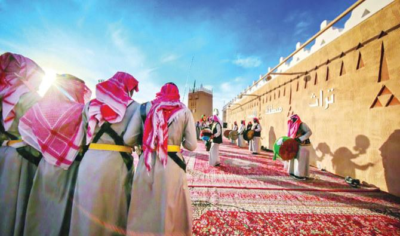
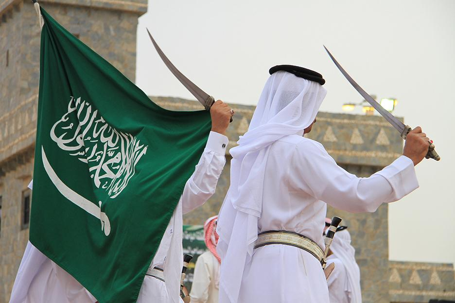
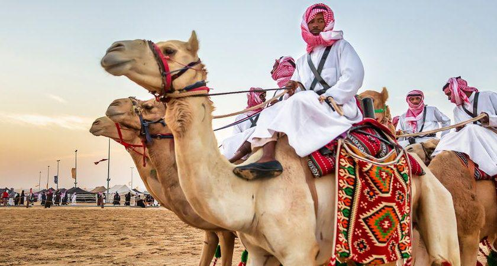

Saudi National Heritage

The culture of Saudi Arabia is a rich one that has been shaped by its Islamic
heritage,
its historical role as
an ancient trade center, and its Bedouin traditions.
Saudi society has experienced tremendous development over the past several decades. The Saudi people
have
taken
their values and traditions – their customs, hospitality and even their style of dress – and adapted
them to
the
modern world.
Arab and Islamic Traditions
Saudi traditions are rooted in Islamic teachings and Arab customs, which Saudis learn about at an early
age
from
their families and in schools.
The highlights of the year are the holy month of Ramadan and the Hajj (pilgrimage) season, and the
national
holidays that follow them. The holy month of Ramadan, during which Muslims fast from dawn to dusk,
culminates
with the Eid-Al-Fitr holiday, in which it is customary to buy presents and clothes for children and
visit
friends and relatives.
The other highlight is the Hajj season, during which millions of Muslim pilgrims from around the world
come
to
Makkah. The Hajj season concludes with the Eid Al-Adha holiday, in which it is traditional for families
to
slaughter a sheep in memory of Abraham’s willingness to sacrifice his son.
Arab traditions also play an important role in Saudi life. These age-old traditions have evolved over
the
millennia and are highly regarded. They include generosity and hospitality, which every Saudi family
offers
to
strangers, friends, and family. The simplest expression of hospitality is coffee – its preparation alone
is
an
intricate cultural tradition, and it is often served in small cups along with dates and sweets. Another
gesture
of hospitality is the burning of incense (oud) to welcome guests.